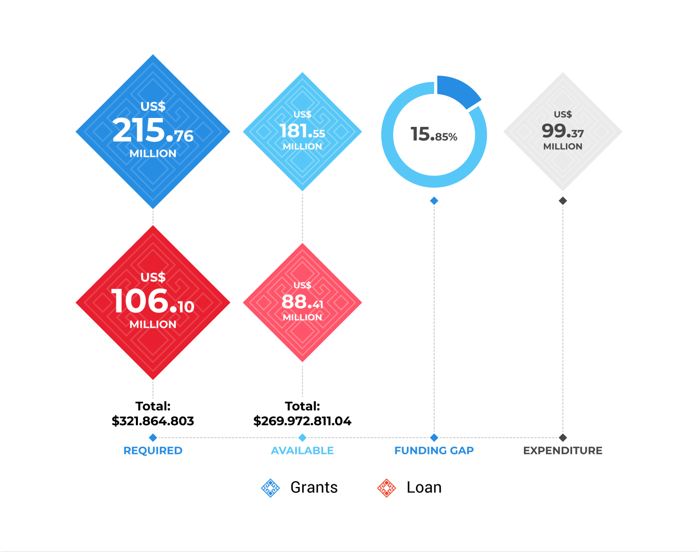

United Nations In Indonesia
Country Results Report 2021
Funding Frameworks and
Resources Mobilization
During the formulation of the UNSDCF 2021–2025, the UN in Indonesia prepared a multi-year funding framework to estimate the total resources that would be required for the full five-year implementation of the UNSDCF, as well as the total resources available.
In 2021, the UN in Indonesia’s total required budget— comprised of grants and loans—was US$ 321.86 million. Of this, the UN obtained US$ 269.97 million in grants and loans to fund the implementation of the UNSDCF in 2021, which entailed a total funding gap of US$ 51.89 million, or 16.12%.

Excluding loans, the UN’s total required budget was US$ 215.76 million. Excluding loans, the UN obtained US$ 181.56 million, which entailed a funding gap of US$ 34.20 million, or 15.85%.